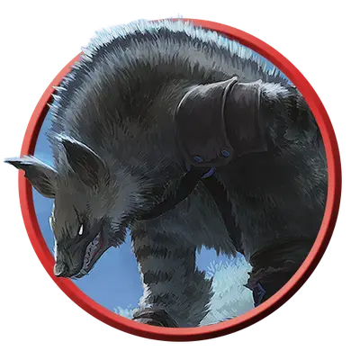

Земельникус-ликвидатор
Groundling Slayer
Среднее Чудовище, Нейтральное Злое

Класс Защиты 15 Инициатива +5 (15)
Хиты 58 (9к8 + 18)
Скорость 30 футов, Копания 20 футов
| мод | спас | ||
|---|---|---|---|
| СИЛ | 17 | +3 | +3 |
| ЛОВ | 16 | +3 | +5 |
| ТЕЛ | 15 | +2 | +4 |
| мод | спас | ||
|---|---|---|---|
| ИНТ | 10 | +0 | +0 |
| МДР | 13 | +1 | +1 |
| ХАР | 8 | −1 | −1 |
Сопротивление урону Яд
Чувства Тёмное зрение 120 футов, пассивное Восприятие 13
Языки Общий
Опасность 3 (700 опыта; БВ +2)
Действия
Мультиатака. Земельникус совершает две атаки Когтями или Кинжалом в любой комбинации.
Когти. Бросок рукопашной атаки: +5, досягаемость 5 фт. Попадание: 12 (2к8 + 3) Рубящего урона. Если цель — существо Среднего размера или меньше, оно Схвачено (Сл освобождения от захвата 13) одной из двух лап.
Кинжал. Бросок рукопашной или дальнобойной атаки: +5, досягаемость 5 фт. или дистанция 20/60 фт. Попадание: 5 (1к4 + 3) Колющего урона плюс 7 (2к6) урона Ядом.
Реакции
Залегание. Условие: По земельникусу попадает бросок атаки, пока он находится на земле. Эффект: Земельникус ополовинивает урон (округляя вниз) от этой атаки.
Бонус мастерства +2
Среда обитания Город, Холмы
Сокровища Оружейные
Земельникусы
Крадущиеся гибриды-слуги
Земельникусы — волосатые, вонючие и ненасытные плотоядные задиры. Они используют когти не только для того, чтобы вспарывать животы своим жертвам, но и чтобы выкапывать ямы-ловушки, прокладывать туннели под зданиями и рыть укрытия, из которых они нападают на добычу из засады.
Земельникус, научившийся скрытности и самообладанию, становится искусным убийцей. Таким земельникусам-ликвидаторам часто поручают одиночные задания, требующие скрытности или устранения цели, либо назначают их поддерживать порядок среди непокорных земельникусов. Обычно ликвидаторы дожидаются окончания боя, прежде чем пожирать убитых ими противников.